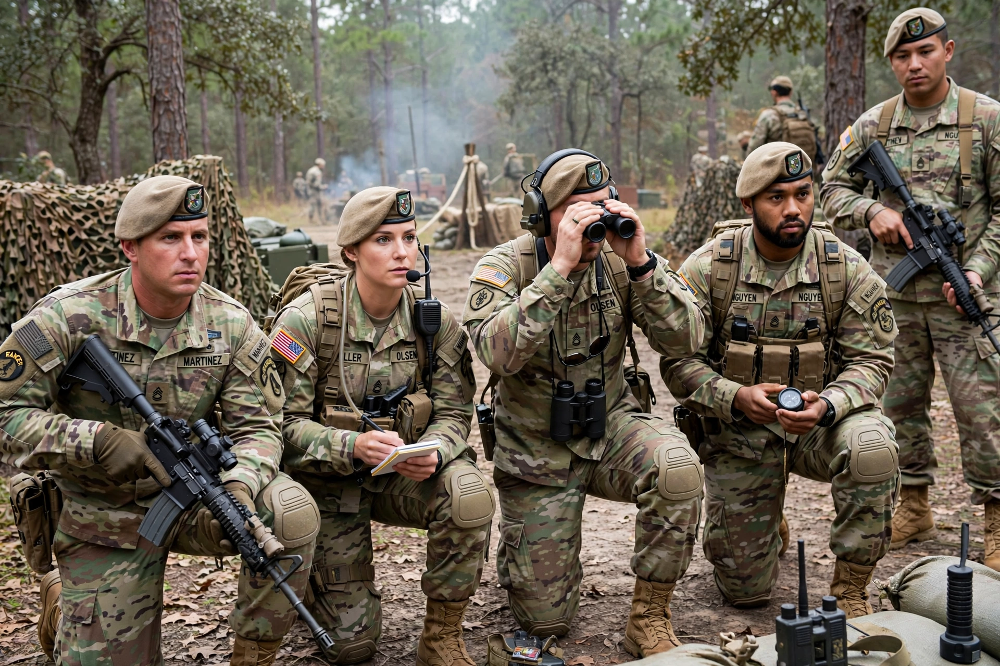

75th Ranger Regiment

| Active | 1984 – present (lineage from 1942) |
|---|---|
| Country | United States |
| Branch | United States Army |
| Type | Special operations light infantry |
| Role | Direct action, airfield seizure, special reconnaissance |
| Part of | U.S. Army Special Operations Command; JSOC taskings |
| Headquarters | Fort Benning (Fort Moore), Georgia |
| Motto | "Rangers Lead the Way!" |
| Beret | Tan |
The 75th Ranger Regiment, also known as the Army Rangers, is the premier light infantry and direct-action force of the United States Army. It is a special operations unit within the U.S. Army Special Operations Command (USASOC), headquartered at Fort Benning (now Fort Moore), Georgia.
Organisation
The regiment consists of a headquarters, a special troops battalion, a military intelligence battalion, and three Ranger battalions: the 1st Battalion at Hunter Army Airfield, Georgia; the 2nd Battalion at Joint Base Lewis–McChord, Washington; and the 3rd Battalion at Fort Benning. The Regimental Special Troops Battalion was activated in 2006 and the Regimental Military Intelligence Battalion in 2017.
History
The regiment traces its lineage to the Ranger battalions of the Second World War, including the units that scaled the cliffs at Pointe du Hoc on D-Day and Merrill's Marauders in Burma. Modern Ranger battalions were re-established from 1974, and the 75th Infantry Regiment (Ranger) headquarters was activated in 1984, redesignated the 75th Ranger Regiment in 1986. Rangers have fought in Grenada (1983), Panama (1989), Somalia (1993, including the Battle of Mogadishu), Afghanistan and Iraq.
Selection and training
Volunteers attend the Ranger Assessment and Selection Program (RASP) at Fort Benning. Enlisted soldiers who pass serve in the regiment wearing the tan beret and the Ranger scroll; the separate Ranger School awards the Ranger tab. The Ranger Creed, memorised by every Ranger, begins "Recognizing that I volunteered as a Ranger."
See also: United States Army Rangers · Ranger School